The following images were generated using the DeepFloyd IF diffusion model
with 20 diffusion timesteps and the captioned text prompts.
seed = 100 is used
for this and following parts, unless stated otherwise.
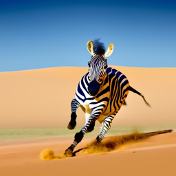
a zebra running in the desert
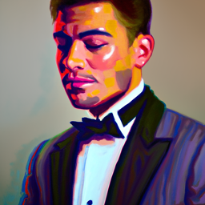
a painting of a man in a tuxedo
Below, I compare image generation with the same prompt with 5 timesteps, 20 timesteps, and
100 timesteps. With t = 5, because each diffusion step is longer,
the image generated is likely something close to the training data
and is very realistic. Additionally, the larger timesteps means text conditioning
had less of an effect, since "sledding" is not shown. With t = 100, since the steps taken are very
small, the image is very unrealistic and incorporates many different details compared to t = 5 and t = 20,
likely because the generation was able to pull from many different parts of the natural image manifold.
With t = 20, we achieve a good balance between matching the text prompt and not incorporating too many
unrelated details / focus on the main subject of the penguin.
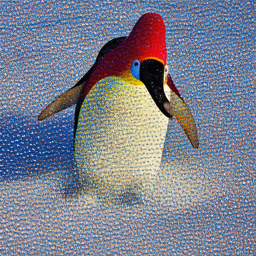
a penguin sledding in snow (t = 5)
a penguin sledding in snow (t = 20)
a penguin sledding in snow (t = 100)
Part A
Part 1.1
The forward noising process of diffusion is implemented by
im_noisy = torch.sqrt(alpha) * im + torch.srt(1 - alpha) * (torch.randn_like(im)),
which uses alpha as the weight to inject random noise into the original image.
I use the same noise schedule as the original DeepFloyd training.
campanile
campanile (noise t = 250)
campanile (noise t = 500)
campanile (noise t = 750)
Part 1.2
Gaussian blur filtering was used to try to remove noise with the following kernel sizes;
as expected, this process does very poorly.
campanile (noise t = 250)
gaussian blur denoising (noise t = 250)
campanile (noise t = 500)
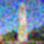
gaussian blur denoising (noise t = 500)
campanile (noise t = 750)
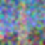
gaussian blur denoising (noise t = 750)
Part 1.3
One-step denoising was completed using DeepFloyd's pretrained UNet denoiser,
where I simply use the one-step noise estimate to solve the previously described
noising formula for the original, clean image. This process results in much
better results than the gaussian blurring, but still performs poorly at high noise levels,
as many details (e.g. tower features, buildings in background) are lost.
im = im_noisy - torch.sqrt(1 - alpha) * noise_est
im = im / torch.sqrt(alpha)
campanile (noise t = 250)
one step denoising (noise t = 250)
campanile (noise t = 500)
one step denoising (noise t = 500)
campanile (noise t = 750)
one step denoising (noise t = 750)
Part 1.4
Iterative denoising was implemented following equation A.3; essentially, instead of taking
one step from t = 990 to 0, I take strided steps of stride = 30. Each previous, less noisy
timestep is iteratively predicted by taking a weighted sum of
the one-step denoising using the current noise estimate and the noisy image (+ random variance).
As seen in the comparisons to one step denoising from t = 690, this method recovers much more
detail (even if it is not necessarily correct detail) and prevents the blurring effect seen in
gaussian blurring and one step denoising. Iteratively taking steps forces cleaner timesteps to
recover finer details and prevents the poor estimate of details from the noisier timesteps from
dominating.
Using the same iterative denoising function, I sample "random" images from noise by
passing in pure noise instead of a slightly noised original image. With no conditioning,
most of these images do not have a clear subject.
Classifier-free guidance is implemented by conditioning on the prompt "a high quality image"
instead of just random, unconditioned noise. In each denoising timestep, I push the model
closer towards this prompt by adding weight * (noise_est - uncond_noise_est) (what direction
to move in to get a higher quality image) to the unconditional output. This method
produces better images with a clear subject and resemble images naturally seen.
sample 1
sample 2
sample 3
sample 4
sample 5
Part 1.7
The same method can be used to use the "a high quality photo" text prompt to condition
the same "denoising" process for images implemented above. At earlier timesteps where the
input image is noised heavily, the images diffused are similar to the results from 1.6 diffusing
from pure noise. At later timesteps where the input image is
less noised, more and more of the original image is recovered. Importantly, compared to earlier iterative denoising,
conditioning on the text prompt forces each output image to retain high levels of detail (even if the
details are hallucinations). The following examples of the SDEdit algorithm are applied on
realistic images.
The same method is applied to drawn (rather than natural, realistic) images, which
shows with noisier input, realisitic images are generated with more and more similar
color composition. At later i_start (less noisy input image), drawing-like images
are generated instead that recover the original input fairly well, even in the case of the
last example where the input is random scribbles.
Inpainting, where only part of an original image is diffused, can be done using the same
generation process from random noise, except areas outside of the designated mask are forced to be the
same as the original image at each timestep. Importantly, this means that the diffusion process can
"see" the entire image as context, which, as shown in the examples, allows the process to
generate "reasonable" inpaints (e.g. lighthouse top for campanile instead of clock,
tomato next to lemons instead of plants, torso with shirt for child).
original
mask to inpaint
area to inpaint
inpainted
original
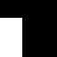
mask to inpaint
area to inpaint
inpainted
original
mask to inpaint
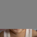
area to inpaint
inpainted
Part 1.7.3
The same SDEdit algorithm can be used to condition on custom text prompts instead of
the "high quality photo" prompt. Similarly, with noisier input image, the text prompt is
more influential on the image, but with cleaner input images, the text prompt is
less influential and the original image is mostly recovered.
"a stick of butter"
SDEdit i_start = 1
SDEdit i_start = 5
SDEdit i_start = 7
SDEdit i_start = 10
SDEdit i_start = 20
original
Using the same CFG diffusion process, we can generate visual anagrams where inverting the image
leads to a different appearance and subject. This was done by averaging the noise estimates
(and variance) of
prompt 1 and the vertically flipped noise estimates of prompt 2.
"a pencil sketch of a butterfly"
"a pencil sketch of women dancing in dresses"
"a painting of a sleeping man"
"a painting of an oasis in a desert"
Part 1.9
Similar to part 1.8, the noise estimate can be blended to create hybrid images that appear
like prompt 1 from further and prompt 2 from further. This was done by using a gaussian
filter of kernel = 33 sigma = 2 where the first prompt noise estimate is low pass filtered
(gaussian blur applied) and the second prompt noise estimate is high pass filtered (original
image - gaussian blur applied), then the results are combined. Variance was processed in the same
manner.
"a pencil sketch of a butterfly" and "a pencil sketch of women dancing in dresses"
"a photo of a waterfall" and "a photo of a refrigerator"
Part B
Part 1.2
To noise the input MNIST images, random noise is simply added with
x + torch.randn_like(x) * noise_level
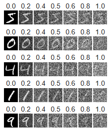
noised digits at different noise levels
Part 1.2.1
An uncondition UNet model was trained to denoise MNIST images with
noise level = 0.5. After 5 epochs, the model does a reasonable job of
reconstructing the input images (with slight blur).
Training was done using a batch size of 256, constant learning rate of 1e-4, and
layer size of 128.
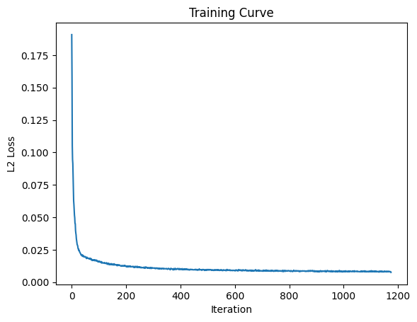
training curve
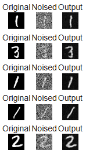
epoch 1
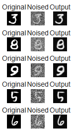
epoch 5
Part 1.2.2
As expected, the model does a poor job of denoising images with more noise
than the noise level = 0.5 that the model was trained on.
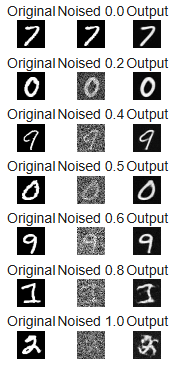
model inference on varying noise levels
Part 1.2.3
Using the unconditional UNet model to diffuse images from random noise instead
always yields images of the "average" digit. This is expected, since
because we are using MSE loss, the model
simply tries to fit the output the best to all digits that it has seen, which
would output an average overlay of every single digit. Model convergence is
stable because the model simply converges on this average digit, although the loss
is higher than the previous part, as the average digit has some distance from each
digit example.
training curve
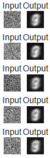
epoch 1
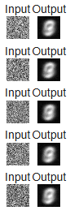
epoch 5
Part 2.2
A flow matching UNet is trained which instead takes iterative steps towards the output image, allowing
the output image to land somewhere "on" the digit image manifold, instead of an average of the
image manifold. t is injected into the model using a fully connected layer that projects
scalar t to the dimensions of the convolution blocks. Each training sample is independently noised to
a [0, 1) time step. To account for these changes,
instead of previously where the loss was simply the difference of the output image from the input image,
the loss is instead the difference between the predicted velocity and the difference of the noised
image at time t and the original image (the flow!).
Training was completed using a batch size of 64, a hidden layer size of 64,
and a learning rate of 1e-2 that exponentially decays per epoch with gamma = (0.1 ** (1 / num_epochs)).
Although this model is able to generate non-averaged outputs, the digits generated
still do not clearly resemble a certain digit and are not at the quality of the input training data.
To encourage the generated digits to conform to specific digit classes, we also
input the classes of the training images using a fully connected layer that projects from
the one-hot encoded class to the convolution dimensions. A dropout rate of 0.1 is used which
results in no class conditioning. Training was completed with the sample model parameters as above.
As shown, this model results in significantly higher quality digits generated, and each generated
image clearly corresponds to a certain class.
If a scheduler is not used, I would need to lower the very high learning rate of 1e-2
to prevent the model from "overshooting" the correct solution early. Using a learning rate of 1e-4
instead, I compensated by training for more epochs, as it may take longer for
the solution to converge (which is shown through the noisier training curve). As shown,
with a slower learning rate to compensate for not using a scheduler, it takes about 30 epochs
to reach the same quality of output images.